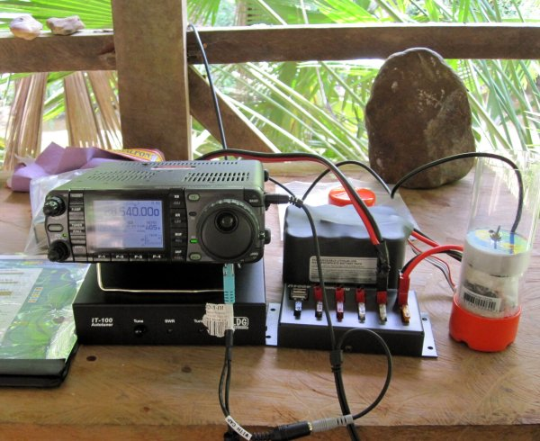
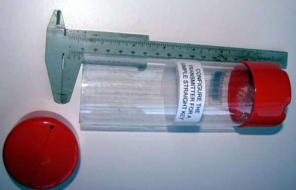
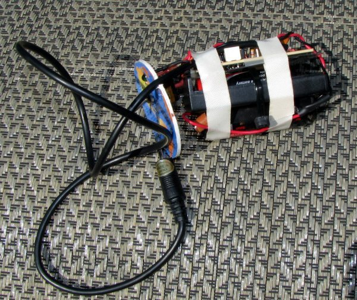

Pharos: A Picaxe CW Beacon Keyer
Bill Prats K6ACJ

(Photo by Sidney Sudberg K6DMT)


References
- Source code for this project:
http://hamradioprojects.com/authors/k6acj/+pharos/code - ARRL band plan with beacon frequency information:
http://www.arrl.org/band-plan-1 - Picaxe Getting Started
http://www.picaxe.com/Getting-Started/PICAXE-Manuals/ - Picaxe information and User manuals
http://www.picaxe.com/ - Axepad IDE for Windows, Linux, and Mac
http://www.picaxe.com/Software/PICAXE/AXEpad/ - Picaxe Programming Editor for Windows
http://www.picaxe.com/Software/PICAXE/PICAXE-Programming-Editor/ - Picaxe 08M2 Data Sheet
http://www.picaxe.com/docs/picaxem2.pdf - Picaxe Chips and boards are available from
http://www.picaxe.com
http://www.sparkfun.com
http://www.phanderson.com/picaxe
License
The design and schematics in this project are licensed under the
CC-BY-SA 3.0 license:
http://creativecommons.org/licenses/by-sa/3.0/
Source code by Stephen Page VK6HV, modified by Bill Prats K6ACJ for Picaxe 08M2, original code at http://members.westnet.com.au/page3/picaxe-08m_mimi_28mhz_beacon.htm is released under the GPL license: http://www.gnu.org/licenses/gpl.html.
About the Author
Bill Prats, K6ACJ, licensed in 1957, is active on HF and VHF at home, mobile in his VW Westfalia, and HFPack from Quartzsite, Arizona to Madrid, Spain. He retired from a life long career in high end computer hardware, software, and I.T. management. His favorite projects combine RF electronics, firmware, and packaging to make something durable for use in shack or field.